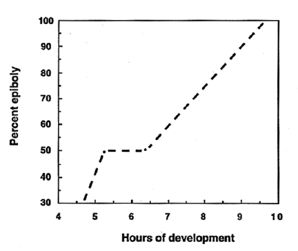

Modified from: Kimmel et al., 1955. Developmental Dynamics 203:253-310. Copyright © 1995 Wiley-Liss, Inc. Reprinted only by permission of Wiley-Liss, a subsidiary of John Wiley & Sons, Inc.
Fig. 12. Idealized rate of advance of the blastoderm margin over the yolk cell during epiboly (at 28.5C). Percent epiboly refers to the fraction of the embryo (blastoderm plus yolk cell) that is covered by the blastoderm. After 6 2/3 h the rate is fairly constant, at about 15% epiboly per hour. We observed groups of about a dozen embryos developing together to obtain the data, and here ignore variability among the embryos.

Figure 12